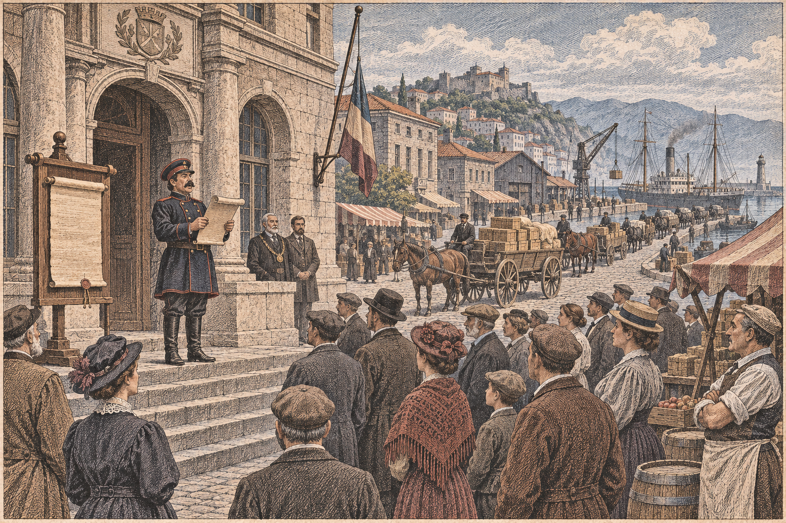
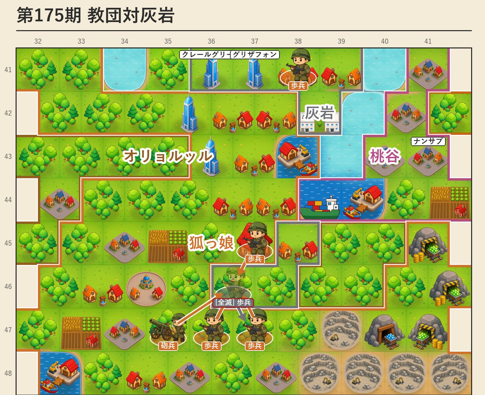

カペレナ、中立を宣言 青海と講和
「王国は中立とす、されど両陣営への貿易は続行」
黒潮救援の援軍艦を沈められた青海が和を求め、カペレナが応じた 連合軍にとどまりつつ掲げた中立が、二股論に一つの答えを出した

【総合部】カペレナ王国が第175期、青海共和国との戦争を終え、「王国は中立とす、されど両陣営への貿易は続行される」との声明を掲げた。前号で伝えたとおり、カペレナは黒潮自治国の救援に向かう青海の援軍艦を撃沈した。援軍二万千人を失った青海はカペレナへ講和を求め、第175期、両国の停戦が成立した。カペレナは連合軍にとどまったまま、旗印の上では中立を名乗り、どの陣営とも商いを続けると宣言したのである。
本紙はこれまで、連合軍に属しながら教団やオリョルッルと友好を結ぶカペレナの姿を「二股の外交」とみてきた。今回の中立宣言は、その身の振り方に、カペレナ自身が一つの名を与えたものと読める。どちらの陣営にも深くは与せず、しかし双方と商う——「中立にして通商」という立場を、声明として正面から掲げた。前号で在チェスの農園主レンゾ・ヴァルトマン氏が「独立国家として外交の自由は縛られない」と語った見方を、カペレナは行動で裏づけた形だ。外交面の詳報は2面。

教団、灰岩の都を囲む
狐っ娘の尻尾教団は灰岩王国の町と兵站基地を奪い、兵站では予備兵千人が投降し、別の町では食糧五万トンを徴発した。灰岩の歩兵一部隊も玉砕し、人口は二万千九百人まで減った。首都ロシュグリーズは、もはや教団の目前にある。詳報は3面。
オリョルッル、百七十五期杯を受ける
首位オリョルッル王国が、第175期の節目に「百七十五期杯」を受けた。人口百八十万六千六百人、領土三百七十一区画。黄砂との停戦も成り、北の巨人はいよいよ抜きん出た。詳報は8面。